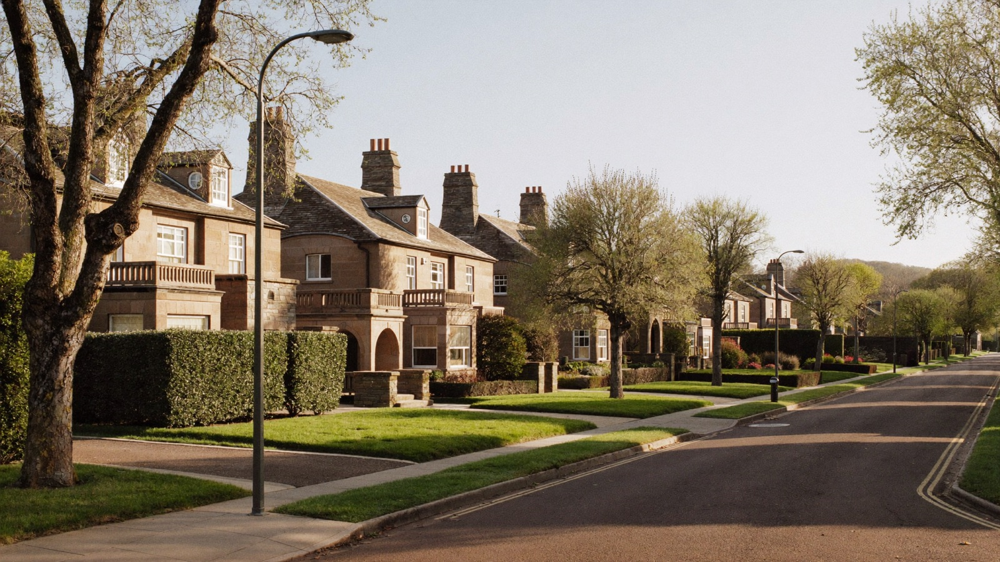
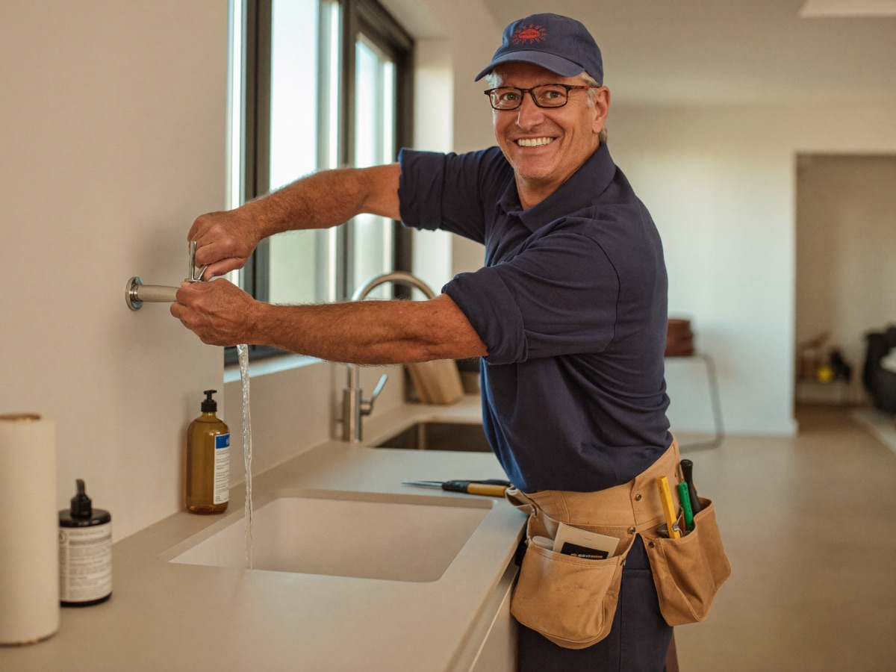
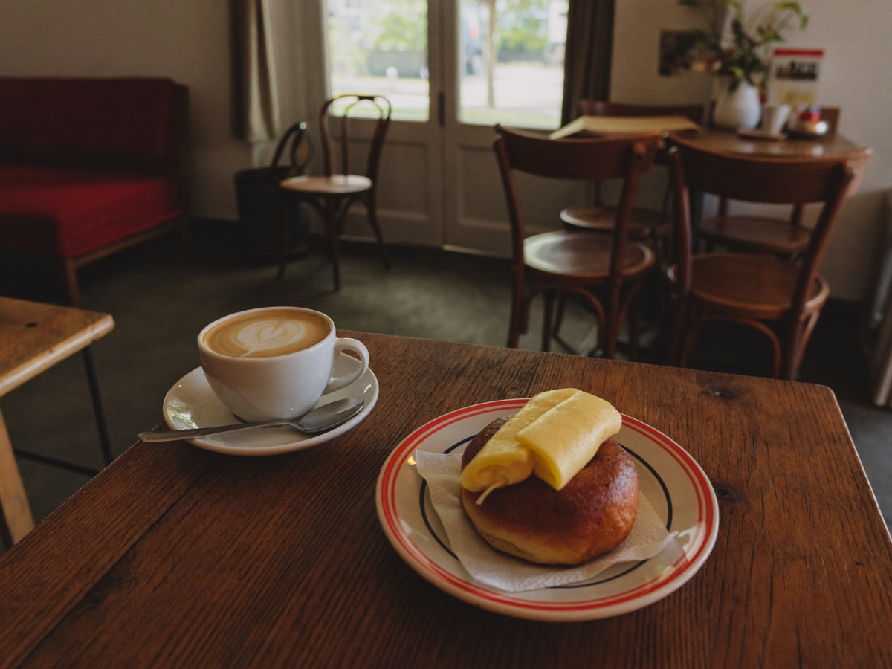
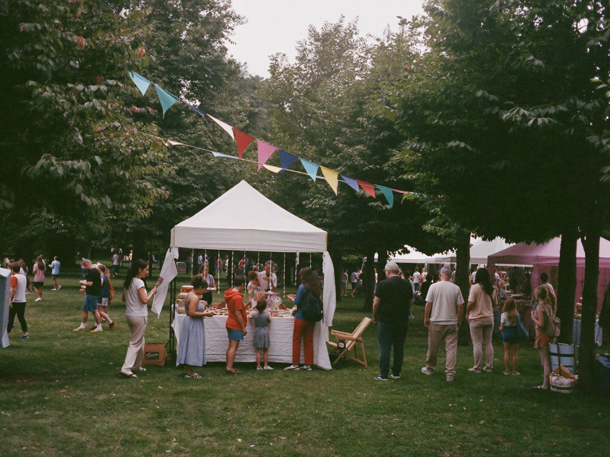
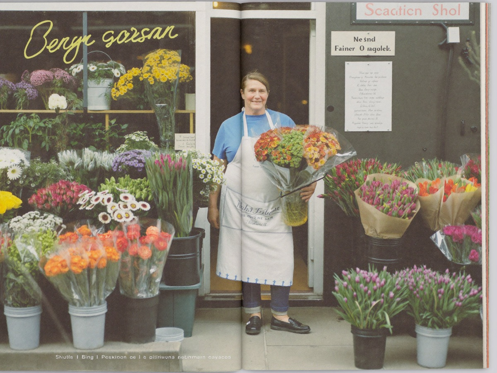

NM Local is a new community magazine for Newton Mearns — free through your letterbox every month, with the people, places and trusted local businesses that make the Mearns home. Backed by an online directory and an email newsletter.

From the magazine
A taste of what Issue 1 is about — written for Newton Mearns, about Newton Mearns.

The six checks worth doing before anyone lifts a tool in your home.

From morning rolls to Friday-night tables — how to eat like a local.

Fairs, clubs, classes and community councils — your doorstep diary.

For local businesses
A quarter page is £69 a month, locked for 12 months — with free ad design, a directory listing, the newsletter and a social spotlight included. Founding advertisers get first refusal on being the only business of their trade in the magazine.